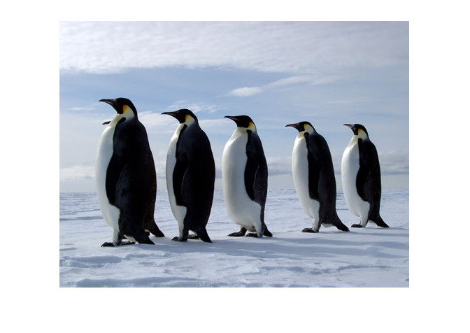
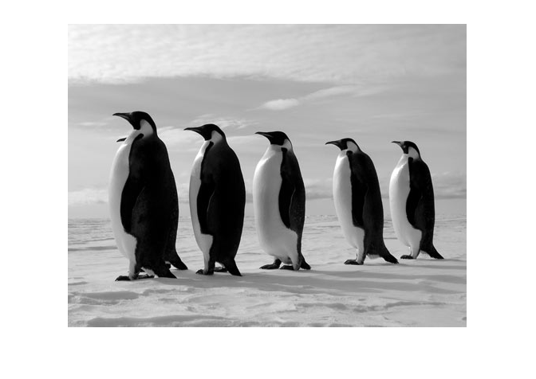
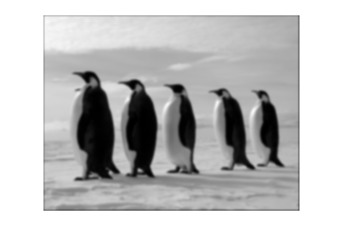
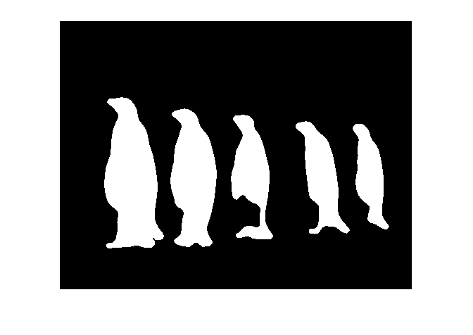
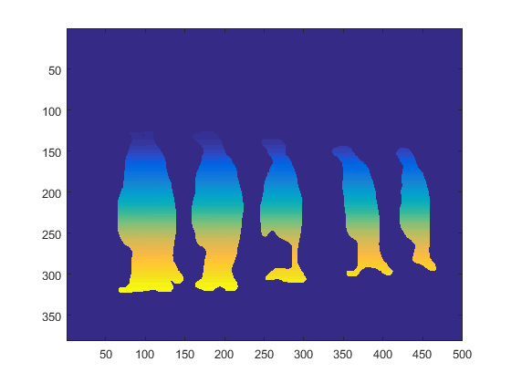
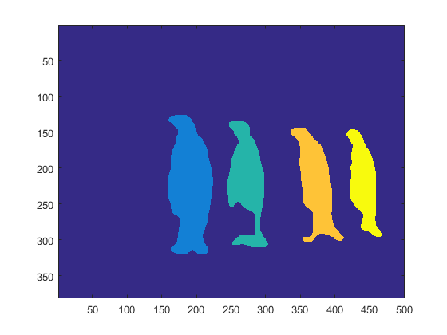
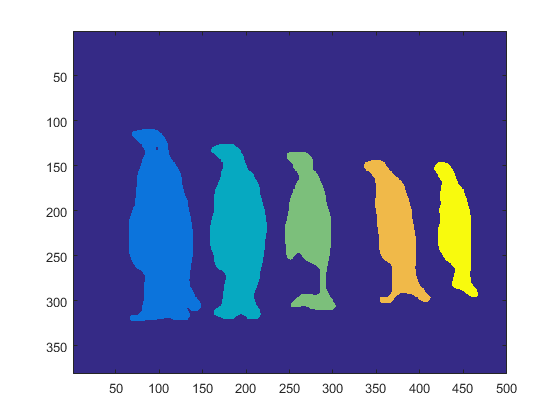

Contents
Open the color images and convert to grayscale
clear all
cpens=imread('penguins.jpg');
gpens=rgb2gray(cpens);
imshow(cpens)
figure
imshow(gpens)
 
Do some filtering
G = fspecial('gaussian',[10 10],2);
blurpens= imfilter(gpens,G,'same');
imshow(blurpens)

Threshold the image
threshpens = calvthresh(blurpens,120);
figure
imshow(threshpens)
Morphological filtering
se = strel('square',6);
erodedpens = imerode(threshpens,se);
dilatedpens = imdilate(erodedpens,se);
medpens= medfilt2(dilatedpens, [10 10]);
imshow(medpens)

Segmentation
seg1 = calvseg(medpens);
should appear as gradiated thresholded image as pixel label value increases
figure
imagesc(seg1)
seg2 = segim2(seg1);

show the segments in grayscale
figure
imagesc(seg2)
seg3=relabel(seg2);

display the final segmented image
figure
imagesc(seg3)

segpars=getallseginfo(seg3);
penguin=segpars(:,1);
area = segpars(:,2);
cx = segpars(:,3);
cy = segpars(:,4);
orientation = segpars(:,5);
table(penguin,area,cx,cy,orientation)
ans =
penguin area cx cy orientation
_______ _____ ______ ______ ___________
1 11936 102.87 225.88 -78.323
2 9228 190.48 225.99 76.527
3 5910 272.9 219.91 73.261
4 5495 372.49 223.32 -85.283
5 4098 441.17 220.47 72.49